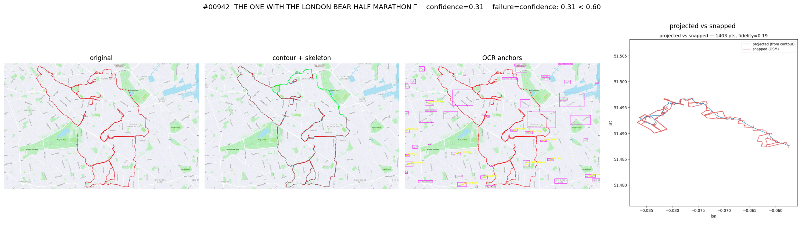
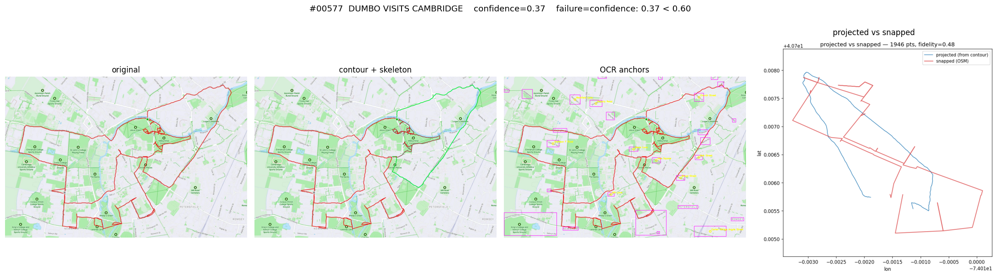
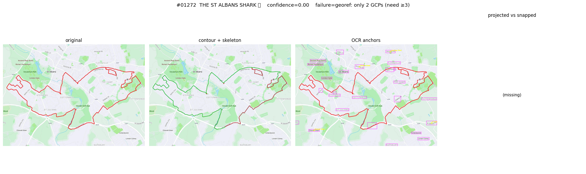
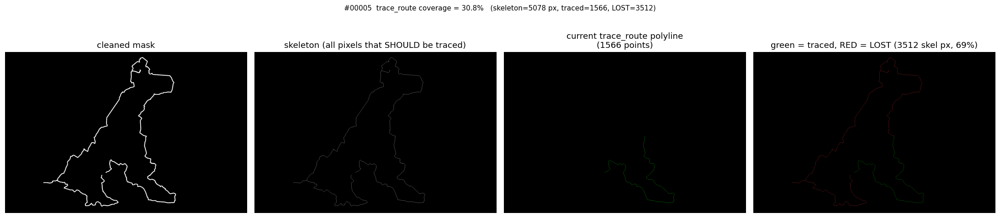

#910London Marathon — SHIP-strict
- Phase 4a
- SHIP (conf 0.60)
- Phase 4b
- SHIP-strict (conf 0.60, kind=street)
- GCPs
- 5 unique, RMSE 5.46 m, fidelity 0.40
unchanged ✓ — the canonical good ship; pipeline produced the same GPX

What changed. Phase 4b adds a tighter pre-fit gate (min_gcps=5, dedup, RMSE>0.5m), a review tier (min_confidence=0.4, strict ship at 0.6), and a centroid-anchored city-scale fallback for OCR-zero images. The contour extractor was fixed to capture all skeleton branches (Phase 4a was losing 25–75% of the cartoon) AND to preserve all components ≥min_area(was: largest only — dropped 2 of 3 turtles on #1135 Rotterdam Turtles).
For street-scale routes (SHIP / REVIEW / FAIL-conf): the Phase 4a 4-panel summary (original / contour / OCR anchors / projected-vs-snapped). For city-scale routes: the Phase 4b 3-panel (original / multi-segment contour / geographic placement). Click any thumbnail to open the full PNG.







_largest_component was dropping 2 of 3 turtles (each ~65% biggest's size). Now preserves all components ≥ min_area.


Two upstream bugs were dropping huge fractions of the cartoon before the pipeline even reached the affine fit or the map-match. Both fixed in this session.
trace_route picked one path through branches
The legacy trace_route walked the skeleton as a single
endpoint-to-endpoint path. At every junction it picked one branch and
abandoned the others. Even the shipped London Marathon was being snapped
against just 36% of its cartoon.

Manchester Dog: green = traced, red = LOST. The new
trace_all_polylines decomposes the skeleton into one polyline
per node-to-node edge — every skeleton pixel covered.
_largest_component dropped sister loops
Rotterdam Turtles' HSV mask had 3 components ≥ 200px
(areas 14031, 9514, 8932 — two turtles plus body trace). The largest-only
filter kept just one, dropping ~65% of the cartoon. Replaced with
_significant_components which preserves every component ≥
min_area (pin markers stay filtered at ~100px area).
Idea: the OCR anchors land precisely on real streets — use them as hard via-points in the snap, forcing Dijkstra to route THROUGH the OCR- identified intersections in order. Implementation: after the affine fit, for each RANSAC-inlier GCP, snap its Nominatim coordinate to the nearest OSM graph node and inject as a via-anchor at the natural contour position.
Result on the same two routes, with RANSAC seeded for reproducibility:
#584 Travelling Elephant: baseline (no via) fréchet 685m fidelity 0.190 length 18760m Option 4 (4 via-nodes pinned) fréchet 685m fidelity 0.162 length 22950m ← WORSE #53 Regent's Park, Great Day For Doggin: Options 1+2 (no via) fréchet 134m fidelity 0.365 length 16953m Option 4 (4 via-nodes pinned) fréchet 1383m fidelity 0.185 length 18984m ← much WORSE
Diagnosis. Nominatim returns ONE specific point per street — typically the node closest to the cluster centroid. But streets are 1D objects: Felix Road is 800m long, and the cartoon crosses Felix Road at one specific point along its length that is NOT Nominatim's centroid. Pinning the snap to Nominatim's choice forces Dijkstra to detour to a different intersection on Felix Road than the one the cartoon actually crosses. The longer path + bigger Fréchet are exactly that detour cost.
This is structurally the same family of negative result as options 1+2: the OCR signal is correct, but the geographic anchor we derive from it is too coarse to constrain individual Dijkstra hops. The infrastructure (k-paths, shape rerank, via-node pinning) is sound and tested; what's missing is a better mechanism for picking the right OSM node per OCR'd street.
Two refinements that might unlock option 4 (not yet built):
way[name="Felix Road"]
returns every node on Felix Road. Pick the one nearest the projected
polyline's nearest pass to Felix Road's bbox. ~half-day work + extra
API budget.The user noted that even successful reconstructions can show visibly-wrong shapes — the elephant's trunk taking a wrong turn — because Dijkstra optimises path length, not shape fidelity. Options 1 (denser waypoints) and 2 (k-shortest- paths + Fréchet shape rerank) were implemented and evaluated with the RANSAC affine-fit seed pinned to remove run-to-run noise:
label step k wp reranked fréchet fidelity iou baseline (Phase 4a defaults) 30 1 170 0 685 0.190 0.316 Option 1 only (denser waypoints) 15 1 329 0 685 0.191 0.318 Option 2 only (k=3 shape rerank) 30 3 170 0 685 0.190 0.316 Options 1+2 (15m + k=3 + shape rerank) 15 3 329 0 685 0.191 0.318 sparser + larger K 50 5 104 0 685 0.189 0.314
All five cells produce fréchet=685m and reranked_segments=0.
At dense-city-graph waypoint scales, shortest_simple_paths returns
one path between consecutive snapped nodes — nothing to rerank. The shape gap
isn't "Dijkstra tiebreaker" — it's "the cartoon cuts diagonally between
streets that don't exist that way." Defaults reverted; rerank machinery
kept as opt-in for future experimentation.
Option 3 (HMM map-matcher) is the right next step for the remaining wrong-turn problem on review-tier routes. Three candidates:
fmm (Fast Map Matching, pip-installable Python+C++) — cheapest. ~2 days.Also still to thread through: the multi-polyline contour fix currently feeds only the city-scale fallback. Extending it through the affine snap (so OCR-anchored routes also benefit from complete shape) is a follow-up.
{kind=link}
{kind=link}
{kind=link}